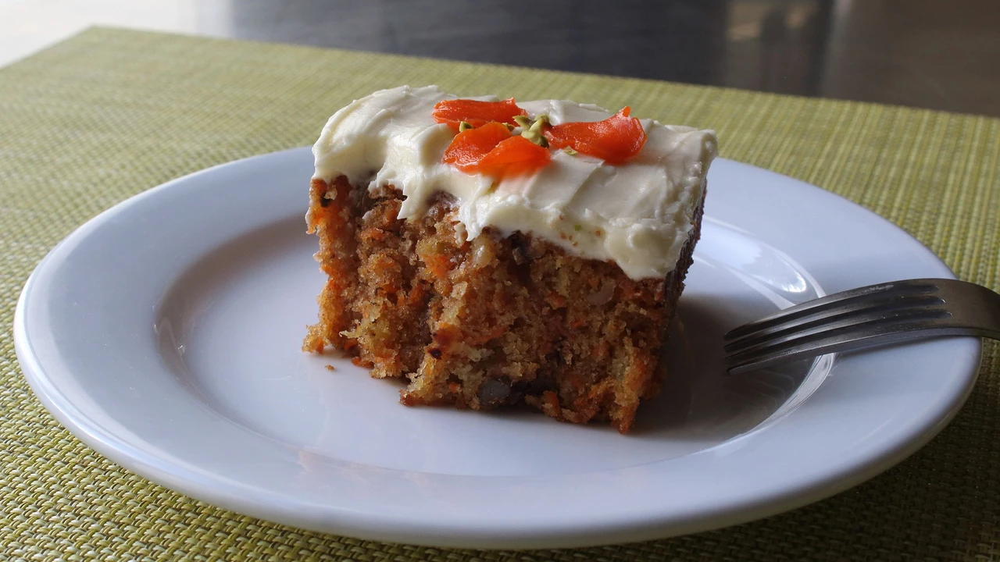

Carrot Cake

A delicious carrot cake recipe
I've made the recipe with vegetable oil rather than coconut oil and it worked just as well
What ingredients do you need?
For the Cake:
- 2 cups all purpose flour
- 1 teaspoons salt
- 1 tea spoons baking soda
- 1/2 teaspoons ground ginger
- 1/2 tablespoon and 1/2 teaspoon baking powder
- 1/2 tablespoon and 1/2 teaspoon ground cinnamon
- 2 cups white sugar
- 4 large eggs
- 1/4 cup unsalted butter
- 1 cups coconut oil
- 2 cups finely grated carrots
- 1 can finely crushed pineapple,drained
- 1/2 cup finely chopped pecans
- 1/2 cup finely chopped walnuts
For the Frosting:
- 1 package cream cheese
- 1 cup unsalted butter
- 1 1/2 teaspoons vanilla extract
- 3 cups icing sugar
How to make
- Preheat the oven to 175 degrees C
- Place flour in a bowl. Add salt, baking soda, and baking powder. Sprinkle in ground ginger and cinnamon. Whisk thoroughly until combined. Set aside.
- Add sugar to a separate bowl. Whisk in eggs until mixture is smooth and pale yellow, 2 to 3 minutes.
- Heat butter and coconut oil in a saucepan over low heat until just melted but not too hot. Whisk into the bowl with the eggs and sugar until well combined. Add carrots, crushed pineapple, pecans, and walnuts. Stir well.
- Stir flour mixture into the carrot mixture until no dry spots remain. Pour batter into a greased 9x13-inch baking pan. Tap the pan against your counter to let any big air bubbles rise to the surface.
- Bake in the preheated oven until a toothpick inserted into the cake comes out clean, 40 to 45 minutes. Let cool completely before frosting, at least 40 minutes.
- Beat cream cheese, butter, and vanilla extract together using an electric mixer until light and fluffy. Gradually beat in the confectioners' sugar to form a smooth frosting. Spread evenly over the cooled cake. Chill completely before slicing.
Main Page